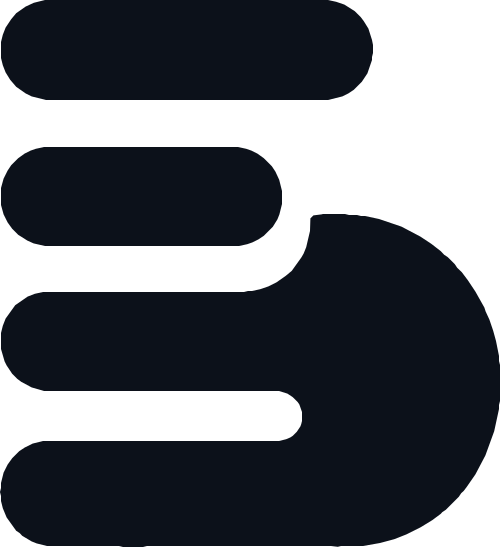
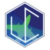

Anshul
Ramanwrites software with an adversarial lens — studying how systems break.
From full-stack platforms to offensive labs — building things that are meant to last, with a deep interest in AI and a curiosity for how systems can be tested, broken, and rebuilt stronger.
A little about me
I grew up taking apart phones, routers, and toys — not because I hated them, but because I wanted to see how they failed. That same curiosity now runs through everything I build: full-stack platforms, AI systems, cybersecurity, networking, and the messy in-between.
I'm a sophomore at the University of Cincinnati studying Computer Science with a focus on full-stack development and AI systems. Engineering Lead & Founding Engineer at OpenPrem, and Founder at Batch. At OpenPrem, I build peer-to-peer mesh and AI infrastructure: a mesh and orchestration layer that replaces middleware, with OII as the interconnect and SOL as the orchestration language. Dean's List Fall 2025, GPA 3.68, open to summer roles and co-op starting Summer 2027.
My method is short feedback loops: prototype, break, harden. Production-ready apps on one screen, offensive security labs and hardware builds on the other — from Wi-Fi auditing to phishing simulations to local networks. I want to understand where real systems crack so I can build ones that don't.
Outside the terminal, I used to play tennis at the national level back in India, ranked Top 150 nationally, All India Tennis Association. I still pick up a racquet whenever I can, and I'll happily lose to you at badminton, cricket, soccer, or volleyball. On campus I'm in Tennis Club, Bearcat Tech Innovators, IEEE, AAEO, UC Robotics, and the AI Society. Hackathon-tested. Production-tested. Most comfortable when something has to actually work, in front of real users, by morning.
Where I've shown up.
- Leading the platform engineering team at OpenPrem, setting technical priorities, coordinating responsibilities, and combining hands on development with accountability for delivery across its developer facing SaaS and capability registry.
- Leading delivery of the SaaS and registry, bringing capability discovery, API and plugin downloads, installation workflows, documentation, and community features into one platform.
- Defining the platform architecture and technical roadmap, translating product requirements into engineering priorities and coordinating delivery across product, network, and deployment teams.
- Building the developer experience from capability discovery through configuration and execution, connecting application logic, APIs, and interfaces with the underlying infrastructure.
- Establishing repeatable installation, testing, and validation workflows with the deployment team, delivering the tooling and integration needed for deployment with a Fortune 25 enterprise client.
- Productized OpenPrem's peer-to-peer mesh and AI infrastructure into Relix, an agentic platform developers can build on, reducing local setup from roughly 30 minutes to under 3 minutes with a single-binary Windows deployment backed by 14 Rust crates, 90 API routes, and 46 versioned releases.
- Built Relix's governed agent runtime, reducing unsafe tool execution risk by 28% in internal policy tests through bounded reasoning loops, strict decision contracts, approval gates, fail-closed validation, and self-correction.
- Developed SolFlow, a visual IDE for SOL, OpenPrem's orchestration language, building the Rust compiler and bytecode VM compiled to WebAssembly and cutting sample workflow build time from 45 minutes to under 10 minutes across 407 automated tests.
- Took OpenPrem from engineering prototype to enterprise demonstration platform, expanding from 1 prototype to a 15 deployment SaaS demo fleet and 37 page management console with OIDC and SAML SSO, TOTP 2FA, RBAC, real-time monitoring, and mesh operations tooling.

- Building Batch, a verified student network in India that connects people with their peers and communities from exam preparation through college and alumni life.

- Building and maintaining the web platform for the University of Cincinnati's student-run hackathon, serving registration and event operations for hundreds of attendees, organizers, judges, and sponsors.
- Led and managed school-wide science events, demonstrating leadership, professionalism, and team coordination.
- Collaborated with staff and student teams to design interactive STEM activities, fostering a culture of curiosity and innovation.
- Supported children with special needs using patience, empathy, and adaptive communication techniques.
- Assisted children with hearing and speech impairments through tailored learning approaches.
- Coordinated an inclusion awareness event at Pratap Public School to promote social integration.
- Collaborated with staff and volunteers to ensure effective event execution and engagement.
Things I've actually built.
What I actually reach for.
Not a buzzword list. These are the tools I actually reach for when things get real. Hover any tile.
Where I'm learning.
- GPA 3.68 · Dean's List Fall 2025
- Focus: Cybersecurity & Software Engineering
- Data Structures · Algorithms · Systems · Security Labs